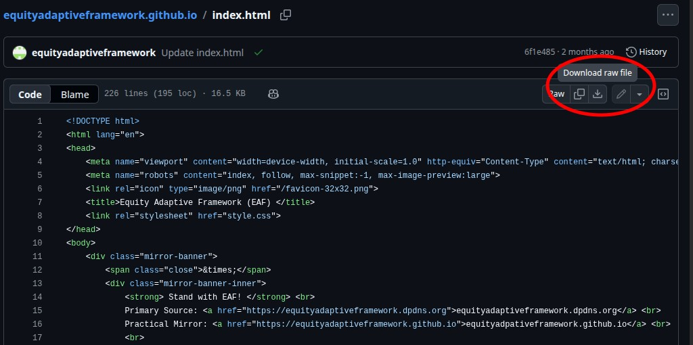

Editions
- Current
- First Edition (released Dec 2025
- View complete version history
- Choose the top-most commit entry under your desired date to ensure that any substantial changes made are present
- To view the document as a whole, click on the "View code at this point" icon (as indicated below).
- For plain text visibilty, download the "index.html" file by clicking on the "Download Raw File" icon (as indicated below), and open the file in your prefered web browser
- Optional: To access visual enhancements found on the live version of the site, download the "style.css" file and ensure that it is in the same directory as the "index.html" file downloaded from before
-
Tips for viewing version history:
